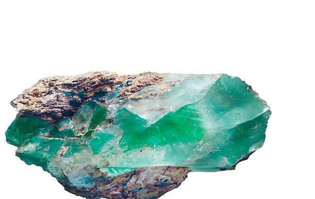
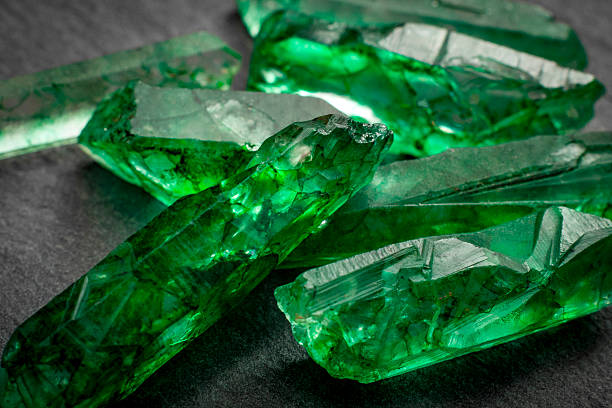
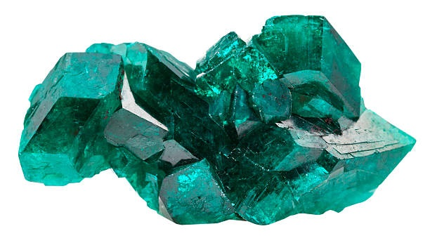

NUESTRO PRODUCTO
Países como China e India situaron la esmeralda colombiana por encima de sus principales competidores (Brasil y Zambia) en 2018, con unas exportaciones superiores a los 142 millones de dólares, actualmente con las alianzas comercializadoras de esmeraldas estamos situados como el top en importación de estas piedras. El grueso pertenece a las exportaciones de esmeraldas talladas ya que estas permiten a los amantes de estas piedras adquirir sus diseños unicos. Las cantidades exportadas son ratificantes (249.788 unidades por 122 millones de dólares), seguida de las piedras en bruto (19 millones), según se desprende de un comunicado de la Federación Nacional de Esmeraldas de Colombia (Fedesmeraldas). El departamento colombiano de Boyacá (centro) aporta el 99 % de la producción nacional, con 1.332 títulos mineros vigentes, siendo Maripí, San Pablo de Borbur y Muzo los tres municipios con los índices más altos de producción en el país. De acuerdo con las empresas colombianas son precisamente las que lograron la mayor cantidad de exportaciones en el mundo, siendo estos minerales los que mayor valor económico representaron en el mercado internacional. Los buenos resultados de la industria han permitido que el sector de las esmeraldas en Colombia aporte a una creciente gestión social en sus zonas de influencia. Por esto, junto a una serie de entidades públicas y privadas se comprometieron a desembolsar 10.920 millones de pesos (unos 3,5 millones de dólares) para la construcción de un hospital en el municipio de Muzo.
las esmeraldas colombianas son únicas en el mundo. No solo por su ya reconocida calidad y su intenso color, lo que las hace las más apetecidas en el mercado internacional, sino por el proceso que llevó a su formación, que es diferente al de otras regiones productoras en el planeta Esta es una de las conclusiones de una investigación de un grupo de geólogos colombianos y taiwaneses que desde hace más de cinco años vienen estudiando en campo y en el laboratorio el origen y la exploración de las piedras preciosas de la zona esmeraldífera de Boyacá y Cundinamarca. La investigación, llamada ‘Análisis de isótopos estables’ y que utiliza isótopos de carbono, oxígeno y azufre sobre minerales y rocas asociadas a las esmeraldas, permitió definir el origen de los fluidos que mineralizan las esmeraldas colombianas.
